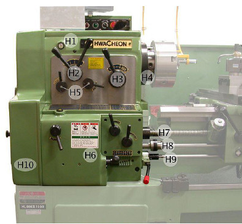
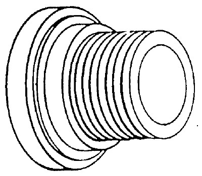
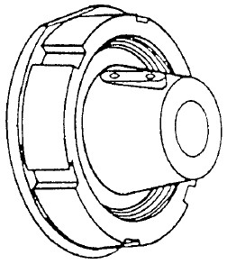
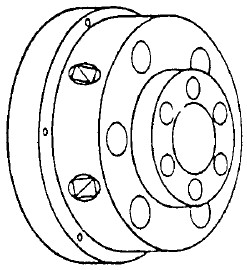
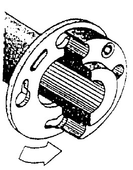

1. Kepala Tetap
Activity
Kepala tetap adalah bagian utama dari mesin bubut yang digunakan untuk menyangga poros utama, yaitu poros yang digunakan untuk menggerakan spindel. Dimana di dalam spindel tersebut dipasang alat untuk menjepit benda kerja. Spindel ini merupakan bagian terpenting dari sebuah kepala tetap. Selain itu, poros yang terdapat pada kepala tetap ini digunakan sebagai dudukan roda gigi untuk mengatur kecepatan putaran yang diinginkan. Dengan demikian, dalam kepala tetap terdapat sejumlah rangkaian roda gigi transmisi yang meneruskan putaran motor menjadi putaran spindel.

http://upload.wikimedia.org/wikipedia/commons/thumb/6/6f/HwacheonCentreLathe-headstock-mask_legend.jpg/683px-HwacheonCentreLathe-headstock-mask_legend.jpg
Gambar 7 kepala tetap
i. H1 Gelas ukur pelumasan
ii. H2 Handle pengatur putaran 1
iii. H3 Handle pengatur putaran rendah dan tinggi
iv. H4 Spindel mesin bubut
v. H5 Handle pengatur putaran 2
vi. H6 Handle pengatur feeding
vii. H7 Poros ulir
viii. H8 Poros otomatis
ix. H9 Poros saklar mesin
x. H10 Cover transmisi mesin
Pada kepala tetap dipasang “ spindle kerja”. Ini merupakan bantalan pada kedua sisinya dan dibuat seperti poros berongga. Hal ini memungkinkan juga dimasukkan benda berbentuk batang. Pada bagian depan poros kerja didalamnya terdapat tirus perkakas untuk memegang senter mesin bubut. Disamping itu poros kerja berfungsi untuk memegang macam-macam alat jepit. Kepala tetap menampung juga roda gigi pengatur kecepatan dan roda gigi pengatur arah pemakanan (roda gigi pembalik). Berikut ini adalah gambar macam bentuk pengikatan pada spindel

Gambar 8 Ulir runcing yang kuat

Gambar 9 Tirus curam dengan mur beralur

Gambar 10 Pemegang model camlock

Gambar 11 Pengencangan piringan sistem bayonet dengan tirus pendek